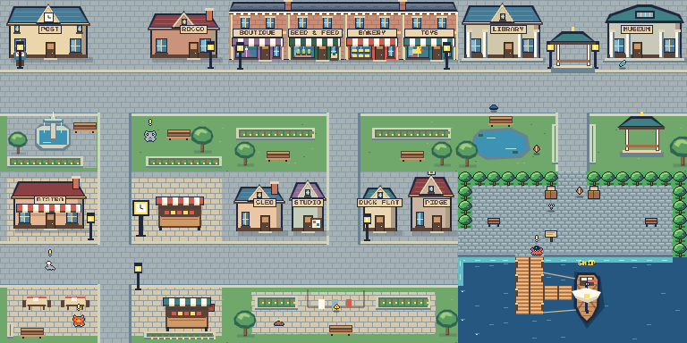
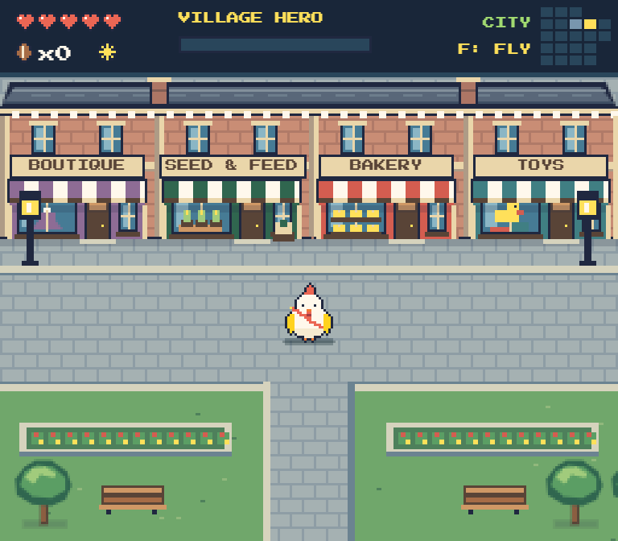

Attached Main Street rowhouses, distinct neighborhoods, and clear stone routes.

Actual game scenes joined into one map.

Four attached brick rowhouses share a roofline, cornice and upper windows. Boutique, seed shop, bakery and toy shop have individual awnings and window displays.
The front walk and the stone route to Residential Lane stay open.
Before views show the city in daylight.